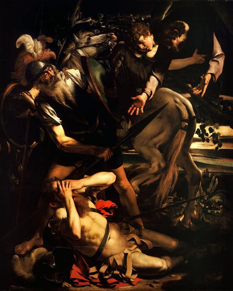
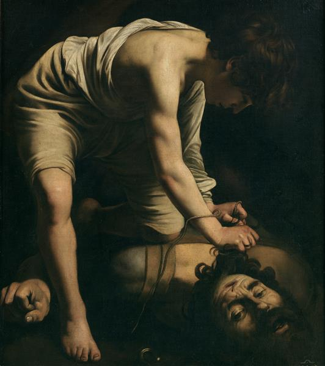
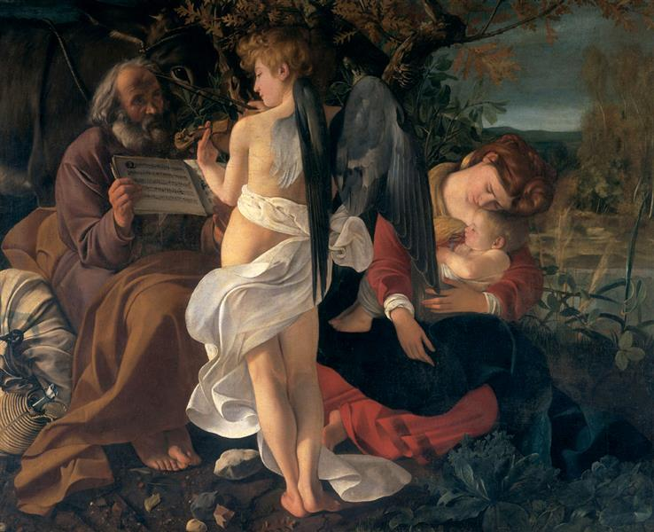
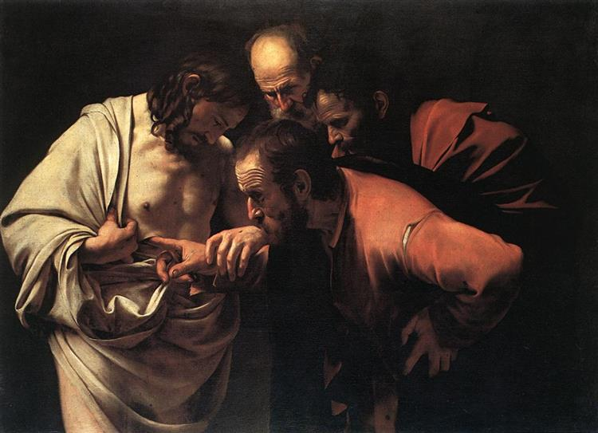

|  |
A pintura, juntamente com a Crucificação de São Pedro , foi encomendada pelo Monsenhor (mais tarde Cardeal) Tibério Cerasi , Tesoureiro Geral do Papa Clemente VIII, em setembro de 1600. De acordo com o primeiro biógrafo de Caravaggio, Giovanni Baglione , ambas as pinturas foram rejeitadas por Cerasi, e substituídas pelas segundas versões que hoje estão penduradas na capela. As datas de conclusão e rejeição são determinadas a partir da morte de Cerasi em maio de 1601. |
|
EO David e Golias no Prado foi pintado no início da carreira do artista, quando ele era membro da família do cardeal Francesco Maria Del Monte . Mostra o Davi bíblico ainda menino (de acordo com a história bíblica) prendendo a cabeça do campeão dos filisteus, o gigante Golias pelos cabelos . A luz atinge a perna, o braço e o flanco de Davi, os ombros maciços dos quais a cabeça de Golias foi decepada e a própria cabeça, mas todo o resto está escuro. Até o rosto de David fica quase invisível nas sombras. Um ferimento na testa de Golias mostra onde ele foi derrubado pela pedra da funda de Davi. A impressão esmagadora é de alguma ação intensamente pessoal e privada – sem triunfo, sem exércitos, sem vitória. |
 |
|  |
Descanso na Fuga para o Egito (c. 1597) é uma pintura que se encontra na Galeria Doria Pamphilj, em Roma. A tela retrata um anjo tocando violino para a Sagrada Família durante o descanso na Fuga para o Egito. A cena é baseada não em qualquer incidente na Bíblia em si, mas em um corpo de contos ou lendas que tinham crescido no início da Idade Média em torno da história bíblica da Sagrada Família em fuga para o Egito em busca de refúgio ao ser alertada de que Herodes, o Grande pretendia assassinar o Menino Jesus. De acordo com a lenda, José e Maria interromperam sua fuga em um bosque; o Menino Jesus ordenou às árvores que se curvassem, assim José poderia apanhar frutos para eles, e em seguida ordenou que uma fonte de água jorrasse das raízes para que seus pais pudessem saciar a sede. Esta história básica adquiriu muitos detalhes extras durante os séculos.Caravaggio retrata Maria dormindo com Jesus, enquanto José segura um manuscrito para um anjo que está tocando um hino à Maria no violino. |
|
criada por volta de 1601–1602. É mantida em Bildergalerie, uma antiga galeria de arte e agora um museu, em Potsdam, Alemanha. A pintura mostra o episódio que deu origem ao termo "Dúvida de Tomé", que é formalmente conhecido como a Incredulidade de Tomé, este episódio esteve frequentemente representado na arte cristã desde pelo menos o século V, e costumava ter uma variedade de pontos teológicos. De acordo com o Evangelho de São João, Tomé, o Apóstolo, duvidou das Aparições de Jesus após a ressurreição e disse: "Se eu não vir nas suas mãos o sinal dos cravos, e não puser o meu dedo no lugar dos cravos, e não puser a minha mão no seu lado, de modo algum hei de crer". Oito dias depois estavam outra vez os seus discípulos juntos, e com eles Tomé. Chegou Jesus, estando as portas fechadas, e apresentou-se no meio. Depois disse a Tomé: Põe aqui o teu dedo, e vê as minhas mãos; e chega a tua mão, e põe-na no meu lado; e não sejas incrédulo, mas crente. Tomé respondeu, e disse-lhe: Senhor meu, e Deus meu! Disse-lhe Jesus: Porque me viste, Tomé, creste; bem-aventurados os que não viram e creram. Caravaggio, na dimensão horizontal da tela, "fotografa" o momento do toque em uma moldura de três quartos, onde as quatro figuras estão dispostas em um fundo neutro e escuro. |
 |